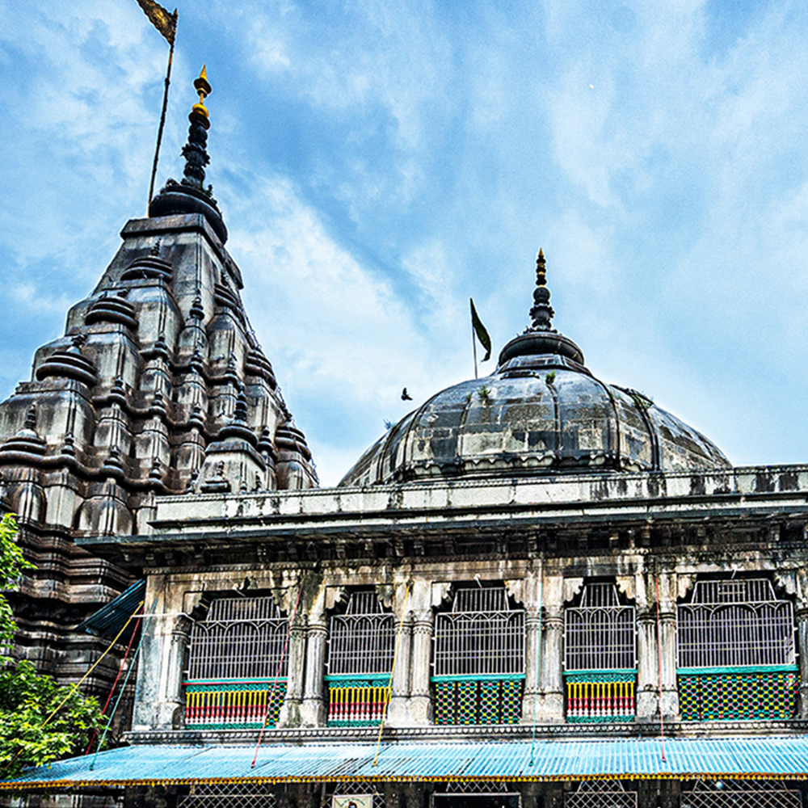
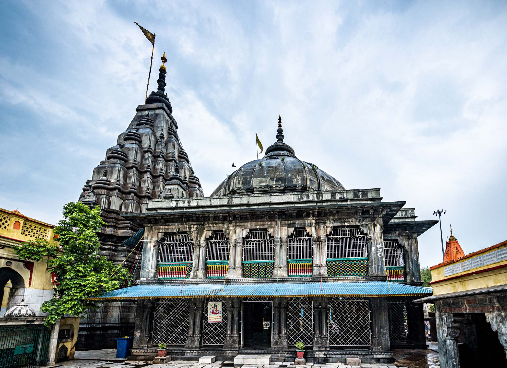
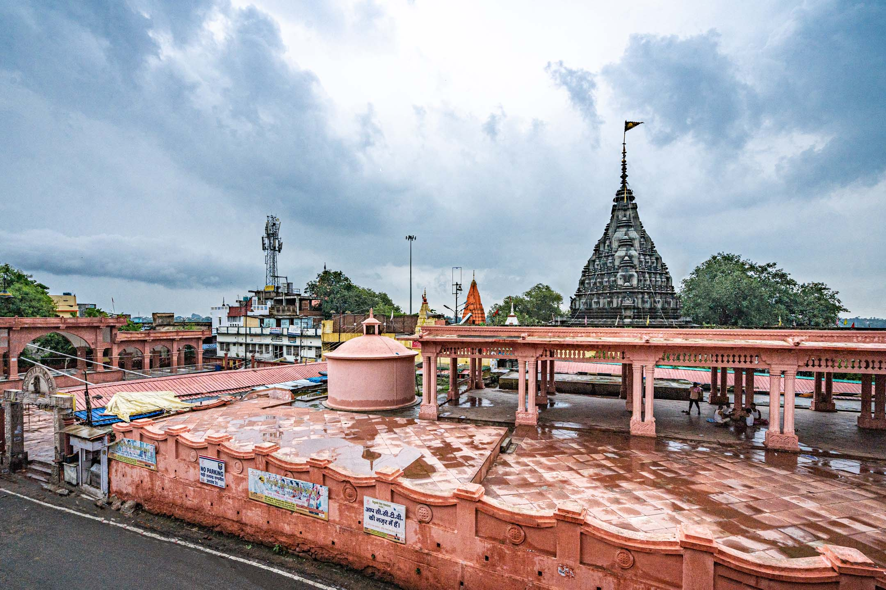
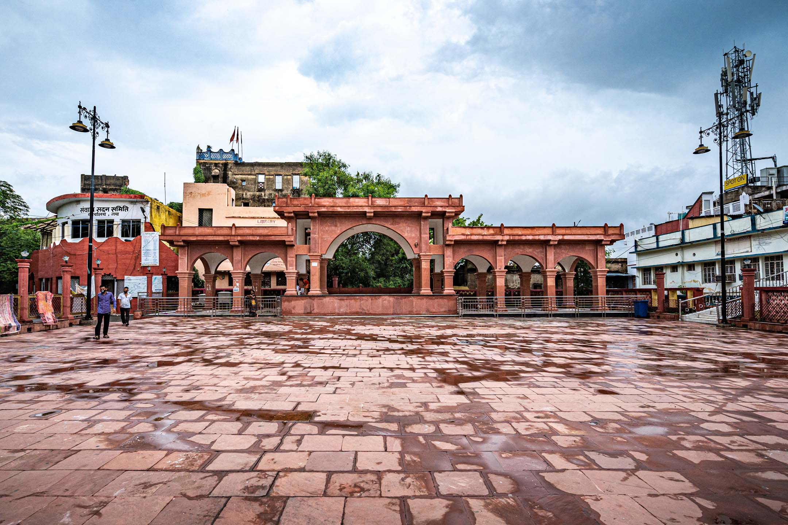

About Vishnupad Temple
The Vishnupad Temple is a must-visit place in Gaya Ji. It is situated on the bank of the Phalgu River and Hindu devotees visit this temple to offer pind daan (ritual for ancestors). The temple is dedicated to Lord Vishnu and is one of the most sacred Hindu sites in Bihar.
The temple is believed to have been built by the demon queen Ahilyabai Holkar in the 18th century. The name "Vishnupad" means "footprint of Lord Vishnu," and the temple houses a 40 cm long footprint of Lord Vishnu imprinted on a rock.
Religious Significance
Vishnupad Temple holds immense religious importance for Hindus. It is believed that performing Pind Daan here helps ancestors attain salvation. The temple is particularly crowded during the Pitru Paksha period when devotees from all over India come to perform rituals for their ancestors.
Architecture
The temple features beautiful architecture with intricate carvings and sculptures. The main shrine houses the footprint of Lord Vishnu on a rock called Dharmasila. The temple complex includes several smaller shrines dedicated to various Hindu deities.




Visitor Information
The temple is open throughout the year and can be visited by people of all faiths. The best time to visit is during the winter months. Special poojas and rituals are performed during important Hindu festivals and the Pitru Paksha period.
← Back to Destinations